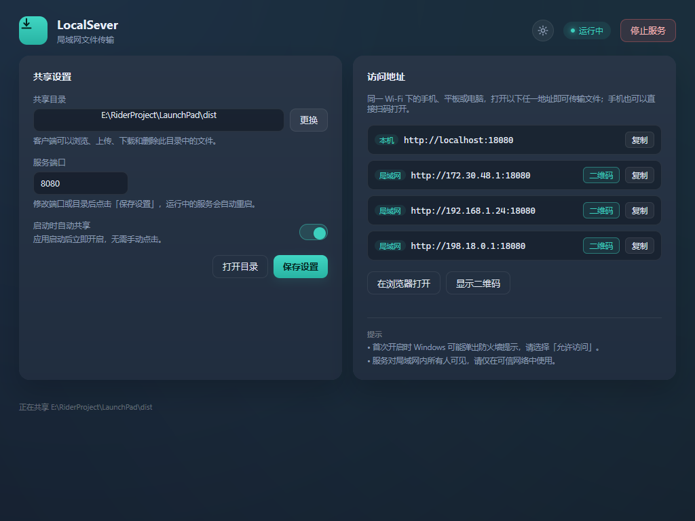

在同一 Wi-Fi 下，手机、平板、电脑用浏览器就能浏览、上传、下载和预览文件。桌面控制面板由 MyGo 原生 UI 绘制，不使用 webview，轻量、快速、跨平台。

从启动服务到手机扫码，全程不超过一分钟；不需要账号、不需要云服务。
点一下开启文件共享，关闭窗口时自动停止服务，不留下后台进程。
随便指定共享文件夹和端口；改完设置，运行中的服务会自动重启。
不用装客户端：手机、平板、电脑连同一个 Wi-Fi，打开地址即可传输。
支持多选、拖拽上传，也能整个文件夹拖进去，目录结构原样保留。
基于 HTTP Range，大文件下载中断后可以接着传，不用来回重下。
图片、视频、音频、PDF 都能在浏览器里直接打开看一眼。
控制面板为每个局域网地址生成二维码，手机扫一下就打开。
桌面端记住你的选择；客户端网页跟随系统，也能手动切换。
不需要配置网络、不需要注册账号。
选对应平台的安装包，双击启动 LocalSever。
默认是 ~/LocalSeverShare，可随时更换目录和端口。
首次运行如有防火墙提示，请选择“允许访问”。
其它设备连同一个 Wi-Fi，扫码或输入显示的局域网地址。
deb / rpm 安装包，或解压即用的 tar.gz。仅依赖 GTK。
纯 Go 后端 + MyGo 原生界面，客户端网页内嵌进单个二进制。